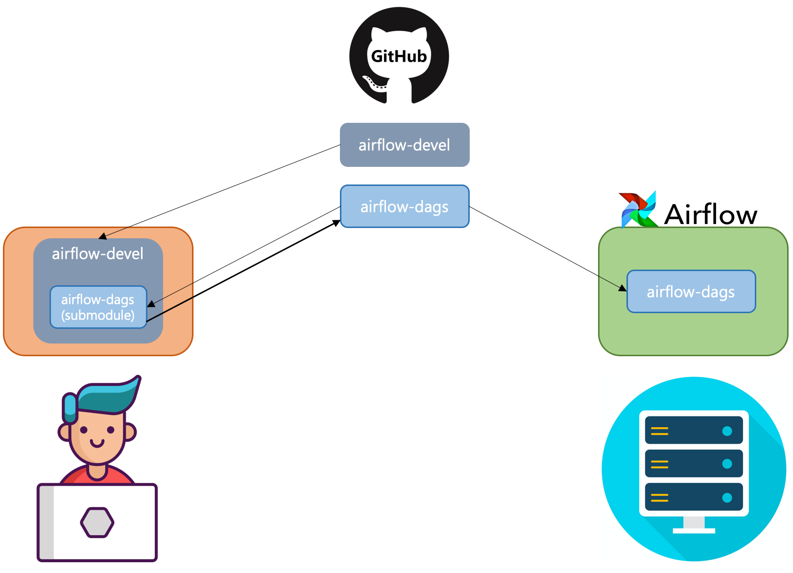

[Airflow] Local 개발환경 설정(1)_설치
로컬에서 airflow dag를 생성하거나, 커스텀 오퍼레이터를 생성하기 위해서 로컬에 airflow를 세팅하고, dag를 개발하는 환경을 구축해 보고자 한다.
요구사항
- os: Mac OS(Catalina)
- github
- Homebrew
- direnv를 설치하기 위함
- direnv
- direnv는 해당 디렉토리에 .envrc 파일을 읽어 자동으로 python virtualenv 환경을 활성화 시켜주는 역할을 한다.
구조

- github에 2개의 repository를 생성한다.(airflow-devel, airflow-dags)
- airflow-devel: 로컬에서 테스트 하기 위한 root 프로젝트, 이 프로젝트는 로컬 테스트 환경에서만 사용한다.
- airflow-dags: 로컬 및 실제 Airflow 클러스터에서 실행하고자 하는 dag 프로젝트, git submodule을 이용하여 관리된다.
0. Homebrew, direnv 설치
## homebrew install
$ /usr/bin/ruby -e "$(curl -fsSL https://raw.githubusercontent.com/Homebrew/install/master/install)"
## direnv install
$ brew install direnv
$ echo 'eval "$(direnv hook bash)"' >> ~/.bash_profile
$ source ~/.bash_profile
1. github Repository 생성
- airflow-devel
- airflow-dags
2. airflow-devel 설정
$ git clone {1에서 생성한 git repository}/airflow-devel.git
$ cd airflow-devel
$ echo 'layout python3' > .envrc
$ echo 'export AIRFLOW_HOME='$PWD >> .envrc
$ direnv allow
$ ls -alh
total 8
drwxr-xr-x 5 user staff 160B 2 5 17:30 .
drwxr-xr-x 93 user staff 2.9K 2 5 17:20 ..
drwxr-xr-x 3 user staff 96B 2 5 17:30 .direnv
-rw-r--r-- 1 user staff 66B 2 5 17:29 .envrc
drwxr-xr-x 9 user staff 288B 2 5 17:31 .git
.direnv가 생성되고 그 하위에 python virtual environement 환경이 세팅된다.
만약 .direnv 가 생기지 않으면 터미널을 종료한 후 다시 해당위치(airflow-devel)로 이동하면 .direnv가 생성될것이다.
## airflow 설치를 위한 requirements.txt 파일 생성
## pip install apache-airflow 명령어로 바로 설치할 수 있으나, 나중에 추가 모듈을 설치할수 있음으로 파일로 관리하자.
$ echo 'apache-airflow==1.10.5' >> requirements.txt
$ pip install -r ./requirements.txt
## airflow-dags 를 git submodule을 통해 추가
## airflow-dags 프로젝트를 dags라는 디렉토리로 클론
$ git submodule -b master add {1에서 생성한 git repository}/airflow-dags.git dags
## airflow에 필요한 DB 테이블들을 생성
$ airflow initdb
## initdb 이후에 airflow.cfg, airflow.db, logs, unittests.cfg가 자동으로 생성된것을 볼수 있다.
$ ls -alh
total 592
-rw-r--r-- 1 user staff 30K 2 5 17:50 airflow.cfg
-rw-r--r-- 1 user staff 216K 2 5 17:52 airflow.db
drwxr-xr-x 3 user staff 96B 2 5 17:48 dags
drwxr-xr-x 3 user staff 96B 2 5 17:50 logs
-rw-r--r-- 1 user staff 23B 2 5 17:36 requirements.txt
-rw-r--r-- 1 user staff 2.5K 2 5 17:50 unittests.cfg
3. Airflow 설정
## airflow.cfg를 열어 아래의 내용을 설정한다.
# airflow의 기본 예제 dag를 로드할지 안할지
load_examples = False
# backfill 기능 on/off
catchup_by_default = False
# timezone
default_timezone = Asia/Seoul
# 얼마나 자주 dags 디렉토리를 스캔할껀지 설정
# dag 파일을 생성하고 아래와 같은 시간이 지나면 자동으로 web에 노출됨
# 테스트 환경이니 더 짧게 가져가도 상관없음, 현재는 10초
dag_dir_list_interval = 10
4. gitignore 설정
airflow-devel Repository를 다른 팀원들과 함께 사용하기 위해서는 airflow 설치시 생성되는 것들을 git에 커밋되지 않도록 ignore 시켜줘야 한다.
## .gitignore 생성
airflow.cfg
airflow.db
airflow-webserver.pid
unittests.cfg
.idea
logs
venv
*.iml
.envrc
.direnv
dist
airflow.egg-info
build
5. Airflow 실행
$ nohup airflow webserver > /dev/null 2>&1 &
$ nohup airflow scheduler > /dev/null 2>&1 &
만약 load_examples를 False로 설정했음에도 예제 dag들이 웹에 보인다면 airflow resetdb 를 실행하여 db를 초기화하고 다시 airflow를 실행하면 된다.
이제 http://localhost:8080 으로 접속하면 로컬에 설정한 airflow에 접속 가능하다.
기타
혼자서 개발하는 환경이라면 하나하나 설정해도 별 이슈가 없지만, 팀원들이 함께 개발환경을 공유해야 할 경우, 위의 단계를 하나하나 진행하라고 하는것은 너무 불편한 일이다. 따라서 스크립트를 만들고 해당 스크립트를 실행하여 한방에 airflow 설치가 되도록 하자.
$ git clone https://github.com/krespo/airflow-devel.git
$ cd airflow-devel
$ ./sbin/setup.sh
설치 후 airflow.cfg를 수정하고 실행하면 된다.
실제 소스는 https://github.com/krespo/airflow-devel에서 확인 할 수 있다. 필요하다면 위의 코드를 fork 떠서 사용하면 된다.